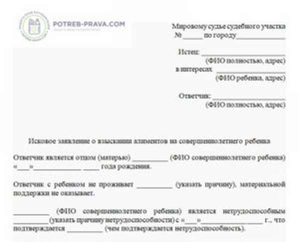

Welcome to Выплаты от государства

Какие выплаты от государства можно получить в пандемию COVID-19
17 : 00 , 28 апреля @Gazeta Prizyv # Социальная политика Доходы рухнули - право на пособие появилось Пособие по безработице Субсидия малому и среднему бизнесу, наиболее пострадавшему из-за ситуации с коронавирусной инфекцией Больничные из-за болезни или карантина "Путинские" выплаты на первого и второго ребенка Единовременное пособие на детей до трех лет Ежемесячные выплаты на детей с 3 до 7 лет По 3000 рублей на каждого ребенка до 18 лет Субсидии на оплату услуг ЖКХ Налоговые вычетыДоходы рухнули - право на пособие появилось
Пандемия COVID-19 оказала влияние на все сферы жизни. И многие уже сильно пострадали финансово и испытывают существенные трудности с работой. Только за последний месяц число людей, подавших заявления о признании их безработными, измеряется десятками тысяч. И это только те, кто был трудоустроен официально и имел «белые» источники дохода.
Большая часть этих людей потеряла работу именно из-за сложившейся ситуации. И сейчас гражданам важно найти новые источники дохода, чтобы содержать детей, гасить кредиты, платить за услуги ЖКХ , покупать продукты и самое необходимое.
Мы сделали подборку выплат и пособий, актуальных именно сейчас. Среди них есть и те, что существуют уже давно, но есть и новые, которые появились в связи с пандемией. Эта финансовая помощь от государства может поддержать семью до момента, когда ситуация изменится к лучшему. Подчеркнём, что раньше у вас могло не быть права на эти выплаты, так как доходы семьи были выше. Сейчас же все может измениться. Поддержка действует на федеральном уровне и не зависит от региона проживания.
Фото: brodv.ru
Пособие по безработице
Кому положено. Тем, кто потерял работу или работал с «серыми» доходами.
Сумма выплаты. В сложившейся ситуации установленный максимум будут выплачивать гражданам, уволенным и признанным безработными с 1 марта 2020 года (т.е. тем, кто встал на учет с 1 марта).
Пособие по безработице устанавливается в размере МРОТ– 12 130 рублей (МРОТ). Такой порядок будет действовать для выплат за апрель, май и июнь. Исключение составляют граждане, уволенные за нарушение трудовой дисциплины или другие виновные действия.
Как получить. Чтобы получать пособие по безработице, нужно встать на учет в службе занятости.До недавнего времени для этого нужен был личный визит в службу занятости. Новый порядок исключает необходимость предоставления копии трудовой книжки, приказа об увольнении и справки о среднемесячном заработке от предыдущего работодателя. Информация о прежнем месте работы и уровне оплаты труда, а также достоверность данных в заявлении, центры занятости будут уточнять путем межведомственного взаимодействия. Теперь гражданину из любого региона можно встать на учет через интернет — на сайте «Работа в России » . Достаточно заполнить заявление и резюме на портале, чтобы органы занятости начали поиск подходящих вакансий. Регистрация длится 10 рабочих дней, на 11-й назначат пособие, если гражданин за это время не нашел работу самостоятельно.
Фото: pbs.twimg.com
Субсидия малому и среднему бизнесу, наиболее пострадавшему из-за ситуации с коронавирусной инфекцией
Кому положено. Деньги перечисляются субъектам малого и среднего предпринимательства, включенным по состоянию на 1 марта 2020 г. в единый реестр субъектов малого и среднего предпринимательства, в наибольшей степени пострадавших в условиях ухудшения ситуации в результате распространения новой коронавирусной инфекции .
Сумма выплаты. Размер субсидии равен МРОТ на 1 января 2020 года и составляет 12 130 рублей. Предприятиям, имеющим работников, сумма пропорциональна их количеству по состоянию на март 2020 года.
Как получить. Для получения субсидии за апрель 2020 года получатель субсидии направляет заявление в налоговый орган в период с 1 мая до 1 июня 2020 года. Для получения субсидии за май 2020 года — с 1 июня до 1 июля 2020 года. Налоговый орган осуществляет проверку информации, необходимой для включения получателя субсидии в реестр. Информация о ходе рассмотрения заявления на получение субсидии размещается на официальном сайте Федеральной налоговой службы . Подробно об этом мы писали здесь
Порядок выдачи субсидий утвержден постановлением Правительства Российской Федерации от 24 апреля 2020 г. № 576.
Фото: turkystan.kz
Больничные из-за болезни или карантина
Кому положено. Всем, кто заболел во время работы или в течение месяа после увольнения.
Сумма выплаты. Пособие по временной нетрудоспособности зависит от среднего заработка, стажа и длительности больничного. Для расчета берут доходы за два предыдущих календарных года (2018 и 2019) и делят их на количество отработанных дней. Получается средний дневной заработок. Эту сумму умножают на количество календарных дней болезни.
По общим правилам размер пособия еще зависит от стажа— 100% среднего заработка получали только те, кто проработал больше 8 лет. Тем, у кого стажа недостаточно, за месяц болезни заплатят МРОТ — 12130 рублей. За меньший период рассчитают пропорционально.
Как получить. Пособие по временной нетрудоспособности платит государственный фонд социального страхования (ФСС) . Но оформлять его нужно через работодателя. Даже если вас уволили, больничный все равно передают на прежнее место работы. И только если работодатель пропал или у него нет денег, можно напрямую обратиться в фонд социального страхования ( г. Владимир ул. Батурина д.39).
Важно! Даже если фирма оформила простой, а работника сократили или уволили, все равно есть шанс получить пособие. Для оформления понадобится больничный лист и заявление. На время самоизоляции лист нетрудоспособности оформляют через Интернет и оплачивают напрямую, причем авансом. Врачи работают дистанционно, вам не придется ехать на работу.
Фото: s0.rbk.ru
"Путинские" выплаты на первого и второго ребенка
Кому положено. Семьям, у которых с 1 января 2018 года родился первый и (или) второй ребенок. При этом среднемесячный доход за последние 12 месяцев меньше двух прожиточных минимумов, установленных в регионе. Подробно об этом пособии мы писали здесь .
Сумма выплаты. Каждый месяц будут перечислять один прожиточный минимум на ребенка по региону. Во Владимирской области это 10 700 рублей. Пособие можно получать до момента, когда ребенку исполнится три года. Для тех, кто уже оформил данную выплату, требование о ежегодном подтверждении дохода временно отменили, то есть пособие продлевают автоматически.
Во Владимирской области размер прожиточного минимума на ребенка — 10 700 рублей.
Как получить. За выплатой на первого ребенка нужно обращаться в соцзащиту или МФЦ. На второго— в пенсионный фонд, тогда деньги будут вычитать из материнского капитала. Сейчас в период самоизоляции с заявлениями будут сложности, так как дистанционно их подать нельзя. То есть для первого назначения нужен личный визит с оригиналами документов. Заранее позвоните в МФЦ выясните график работы учреждения и особенности приема в период самоизоляции. Справку о доходах за 2019 год можно скачать из личного кабинета на сайте ФНС, а вот за прошедшие полные месяцы этого года документ нужно запрашивать у работодателя.
Важно! Если до недавнего времени у вас была работа с хорошей зарплатой, права на такое пособие могло и не быть. У некоторых семей превышение лимита составляло всего несколько сотен рублей. Из-за падения доходов право на выплату может появиться. По владимирскому региону на семью из 3-х человек (2 родителя и ребенок) доход за 12 месяцев, предшествующих дате обращения не должен превышать 850 000 рублей. Формулу расчета можно найти здесь.
Единовременное пособие на детей до трех лет
Кому положено . Всем семьям, в которых есть дети до трех лет, независимо от размера дохода. Эту меру поддержки смогут получить даже те семьи, где родители не теряли работу и доход.
Сумма выплаты. В апреле, мае и июне 2020 года по 5000 рублей на каждого ребенка до трех лет. Общая сумма выплат на одного ребенка составит 15 000 рублей.
Как получить. Нужно подать электронное заявление через сайт ПФР или Госуслуги. Подробнее об этом мы писали здесь
Важно! Личных визитов не будет, документы также не понадобятся: все необходимые сведения у государства есть. Заявление можно подать до 1 октября.
Фото: правозащита38.рф
Ежемесячные выплаты на детей с 3 до 7 лет
Кому положено. Семьям, у которых среднедушевой доход меньше прожиточного минимума на человека. Пособие будут платить с 3 лет и до того времени, когда ребенку исполнится 8 лет.
Пока точных инструкций на этот счет нет, назначать пособие начнут с апреля, а заявления (задним числом) будут принимать только в июне.
Сумма выплаты. Половина прожиточного минимума на ребенка. В нашем регионе это 5 400 рублей.
Как получить. Эти выплаты можно будет оформить дистанционно, но пока заявления не принимаются.
Важно! В настоящее время для родителей, потерявших работу, планируют изменить условия расчета среднедушевого дохода. Так, для назначения пособия не будут учитывать доход на прежнем месте работы. Например, если папу сократили или уволили с 1 апреля, то вся его предыдущая зарплата в расчет не войдет. И тогда семья получит право на пособие, даже если раньше с доходами все было нормально.
Фото: opt-396679.ssl.1c-bitrix-cdn.ru
По 3000 рублей на каждого ребенка до 18 лет
Кому положено. Родителям, которые потеряли работу.
Сумма выплаты. На каждого несовершеннолетнего ребенка — 3000 рублей в месяц с апреля по июнь.
Как получить. Выплата производится одному из родителей, в том числе приемных, усыновителю, а также опекуну (попечителю). В настоящее время механизм выплаты данного вида поддержки прорабатывается. Следим за информацией.
Фото: moykotlas.ru
Субсидии на оплату услуг ЖКХ
Кому положено. Собственникам и нанимателям жилья, которые тратят более 22% совокупного дохода семьи дохода на коммунальные услуги. Фактически это денежная компенсация разницы между реальными и допустимыми расходами на коммуналку.
Сколько заплатят. Компенсация рассчитывается по сложной формуле. Учитывают нормативы расходов, количество членов семьи и даже прожиточный минимум. Поэтому если кто-то потерял работу или часть дохода, то может появиться право на компенсацию.
Как получить. Чтобы получить субсидию, нужно обратиться в МФЦ . Сейчас с этим могут быть сложности из-за перехода на удаленную работу и ограниченного приема. Поэтому нужно заранее уточнить, как и когда можно подать заявление. Для субсидии учитывают общие доходы семьи. Для получения субсидии владимирцы должны предоставить:
заявление, которое заполняется на месте; документы, подтверждающие право владения и пользования квартирой или договор найма; справку о доходах всех членов семьи за последние 6 месяцев; квитанции об оплате коммуналки за последний месяц; документы, подтверждающие право на льготы (если они есть).Активные интернет-пользователи могут оформить заявление на получение субсидии в электронном виде на портале Госуслуг . Если документы на предоставление субсидии подать с 1-го по 15-е число месяца, выплата будет предоставлены с 1-го числа этого месяца. Если же документы подать с 16-го числа до конца месяца, деньги начнут перечислять с 1-го числа следующего месяца. Сейчас продление субсидии на полгода сделали автоматическим. А первичное оформление упростили — понадобится меньше документов.
Если нет права на субсидию, но и денег на оплату коммуналки тоже нет, это не грозит начислением пени или отключением. До конца 2020 года основной долг не будет увеличиваться. Но рано или поздно платить все равно придется!
Важно! Субсидия предоставляется при отсутствии задолженности по квартплате. При расчете субсидии учитываются доходы всех проживающих (зарегистрированных). Оплата за Интернет, стационарную телефонную связь и кабельное телевидение при расчете не учитываются.
Налоговые вычеты
Кому положено. Тем, кто в прошлом году платил налог на доходы и тратил деньги на что-то важное с точки зрения государства. Например на обучение, лечение, покупку жилья или полис ДМС. Этот вопрос мы подробно разбирали здесь.
Стандартный вычет положен и тем, у кого есть несовершеннолетние дети, если по основному месту работы его не предоставили. Проверьте, вдруг у вас сохранились чеки за лечение, обучение или вы не подавали в бухгалтерию заявление на вычет за ребенка. Сейчас есть смысл вернуть часть своих налогов, даже если раньше не было нужды и не хотелось этим заниматься.
Сумма выплаты. С помощью налоговых вычетов можно вернуть 13% от суммы вышеперечисленных расходов. При идеальном раскладе можно вернуть уплаченный подоходный налог со всех сумм полученных доходов.
Как получить. Чтобы вернуть налоги за 2017, 2018 и 2019 год, нужно подать декларацию. Это можно сделать через личный кабинет на сайте nalog.ru. Для вычета за лечение и обучение справки можно запросить по электронной почте. По-хорошему на руках должны быть оригиналы, но сейчас с этим могут возникнуть сложности. Прикладывать к декларации нужно копию, а до проверки оригиналов дело доходит редко. На проверку декларации законом отведено три месяца, еще месяц — на возврат денег.
Получение выплат и пособий никак не навредит в дальнейшем, если вы расстались с работодателем по-хорошему, понимаете его сложную финансовую ситуацию и, возможно, рассчитываете в будущем возобновить трудовые отношения. А все, что нам дает государство, нужно обязательно взять.
Фото: sever-press.ru
Инна Чапурина , консультант-методист по вопросам финансовой грамотности взрослого населения
Верхнее фото: sever-press.ru
Теги: COVID-19 , Детские пособия , Пособие по безработице , Финансы
Источник : Владимирская областная газета Призыв Темы : Социальная политика Анализ × Люди Рейтинг людей Чапурина Инна Организации Рейтинг организаций 873 Правительство Российской Федерации Руководитель: Михаил Владимирович Мишустин (Председатель) 873 166 ПФР Сфера деятельности: Государственное управление 166 343 ФНС России Руководитель: Даниил Вячеславович Егоров (Руководитель) 343 78 ФОНД СОЦИАЛЬНОГО СТРАХОВАНИЯ РОССИЙСКОЙ ФЕДЕРАЦИИ Сфера деятельности: Страхование 78 Места Рейтинг мест 4 352 Россия Столица Москва 4 352 483 Владимирская область Региональный центр 483 71 Владимир Регион Владимирская область 71 События Рейтинг событий 146 Коронавирус События 146 Технологии Рейтинг технологий 31 Портал государственных услуг Продукты 31 О сервисе Условия использования Обратная связь Политика конфиденциальности © 2020 ООО «Селдон Новости»